1과목: 유통경영
1. ( )속에 들어갈 단어들로 올바르게 나열된 것은?
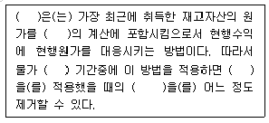
2. 박스안의 문제를 해결하기 위해 도입된 기법으로 현재는 제조업뿐만 아니라 유통, 서비스업에서도 광범위하게 사용되고 있는 이 기법의 명칭은 무엇인가?
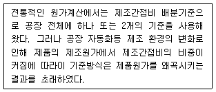
3. 종업원의 동기부여를 조정하는 방법인 인센티브제도에 대한 설명으로 옳지 않은 것은?
4. 산업현장에서 갈등을 해소하고, 고용관계를 개선하기 위한 제도 중에서종업원들이 「경영의사결정에 대한 공정성을 지각할 수 있게 하기 위해 종업원으로부터 기업정책에 관한 반응을 조사하고수용하는 제도」를 무엇이라하는가?
5. 지식경영과 학습조직에 대한설명으로 옳지 않은 것은?
6. 다음은 비공식적 커뮤니케이션과 관련된 어떤 용어에 대한 설명이다. 이 설명에 가장합당한 용어는?
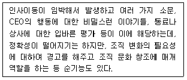
7. 식품위생법에서 명시하는 허위표시 등의 금지 조항으로 보기 어려운 것은?
8. 박스 안의 (가), (나), (다)는 집단의사결정에 활용되는 어느 기법의 특징과 장점을 설명한 것이다. 어느 것에 대한 설명인가?
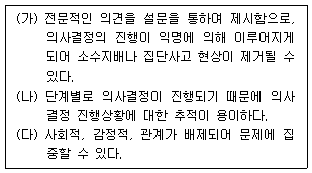
9. 맥클리랜드 (David McClelland)의 성취동기이론의 내용으로 옳은 것은? (문제 오류로 실제 시험에서는 모두 정답처리 되었습니다. 여기서는 1번을 누르면 정답 처리 됩니다.)
10. 회계 정보 사이클의 순서로 올바르게 나열된 것은?
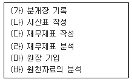
11. 유통경로에서 발생하는 제조업자와 유통업자의 지배력에 관한 설명으로 가장 옳지 않은 것은?
12. 최저임금법에 대한 설명으로 옳지 않은 것은?
13. 소비자기본법에서 정하는 소비자정책의 목표와 가장 거리가 먼 것은?
14. 조직의 위계와 대응되는 정보의 특성이 바르게 짝지어진 것은?
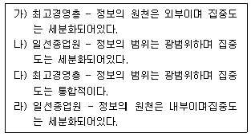
15. 영업인력의 행동평가를 위한 투입자료로 옳지 않은 것은?
16. 전일제로 일을 할 수 없거나 이를 선호하지 않는 사람들 에게 고용기회를 확대한다는 장점은 있으나 2배나 더 많은 사람들을 고용하여 훈련해야하고 부가급부를 분배해야 한다는 단점이 있는 제도는?
17. 인적자원 기획과정의 순서로 올바르게 나열된 것은?
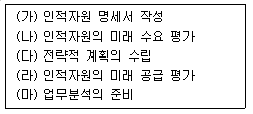
18. 효과적인 성과평가와 검토실행에 대한 설명으로 가장 거리가 먼 것은?
19. 직무확충이론에서 개인적 동기부여와 성취에 중요한 영향을 미치는 요인으로 가장 거리가 먼 것은?
20. 업태개발의 추진 방향에 대한 설명으로 옳지 않은 것은?
2과목: 물류경영
21. 소매물류의 e-Retailing 관리에 대한 설명으로 가장 옳지 않은 것은?
22. 포장(Packing)의 기능별 분류 중 공업포장과 상업포장에 대한 설명으로 가장 옳지 않은 것은?
23. 운송(transportation)에서 수요지, 공급지 수요량 등이 다음과 같을 때 최소비용법을 이용하여 산출한 총운송비용은?
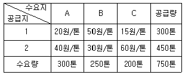
24. 물류(Logistics)의 일반적인 내용에 대한 설명으로 가장 옳지 않은 것은?
25. 물류업무나 정책을 수행하는 과정에서 나타날 수 있는 내용 중 ( ) 안에 들어갈 가장 적당한 말은?
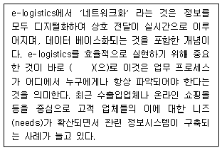
26. 컨테이너 터미널(Container Terminal)에 대한 설명으로 가장 옳지 않은 것은?
27. 전사적자원관리(ERP) 시스템에 대한 설명으로 가장 옳지 않은 것은?
28. 기업의 EOQ model을 바탕으로 한 재고관리에 대한 설명으로 가장 옳지 않은 것은?
29. 다음에서 설명하는 컨테이너(Container)의 특징에 대한 설명으로 가장 적합한 것은?
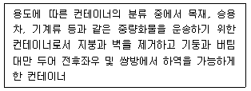
30. 유통산업발전법([시행 2014.3.18.] [법률제12443호, 2014.3.18.,일부개정])에서 사용되는 용어의 정의에 대한 설명 중 옳지 않은 것은?
31. 유통가공물류의 효과로 옳지 않은 것은?
32. 포장용 골판지 상자를 설계 및 인쇄할 때 유의해야 할 사항으로 옳지 않은 것은?
33. 판매시점 정보관리(POS, Point Of Sales) 시스템에 대한 설명 중 옳지 않은 것은?
34. 바코드시스템에 대한 설명으로 가장 옳지 않은 것은?
35. 물류시설의 개발 및 운영에 관한 법률([시행 2014. 1.28.][법률 제12375호, 2014.1.28.,일부개정])에서 사용하는 용어의정의 중 물류단지개발사업에 속하지 않은 것은?
36. 물류공동화의 일환으로 공동수배송을 도입하였을때 화주 및 운송사업자가 기대할 수 있는 효과로 옳지 않은 것은?
37. 다양한 요인을 고려해야 하며, 현실 상황을 확률을 이용해 가급적 비슷하게 모형화하여 만족해의 답을 찾는 수 배송 공급모형은?
38. 공급사슬관리(Supply Chain Management, SCM)의 도입 효과로 옳지 않은 것은?
39. 특허보세구역 중 하나로 수입관세를 부과하지 않은 국외 물품을 원자재로 하여 제조, 가공 등의 작업을 한 후, 다시 수출함으로써 가공무역을 촉진시키고자 운영되는 구역은?
40. 항공화물 요율 중 품목분류요율(CCR : Classified Commodity Rate) 에 적용되는 보기의 화물들 중 할인(Reduction) 품목에 해당되는 것이 아닌 것은?
3과목: 상권분석
41. 상권분석이론에 대한 설명으로 옳지 않은 것은?
42. 도심형입지(CBD)에 대한 설명으로 옳지 않은 것은?
43. 점포의 출점에 대한 설명 중 입지요소에 대한 내용으로 가장 옳지 않은 것은?
44. 기존 상권인구 50,000명에서 신규 점포 출점으로 중복되는 인구가 20,000명이라고 한다. 기존 점포와 신규 점포의 상권 중복에 따른 시장 활성화 정도가 1.4배가 된다고 하며, 활성화 비율은 균등하게 나뉜다고 한다. 이때의 경쟁영향도를 산출하면 얼마인가?
45. 중심성지수에 대한 설명으로 옳지 않은 것은?
46. 외부의 대도시 A에 흡인되는 중소도시 C의 소매 판매액 비율을 계산하고자 한다. 다음 중 가장 올바른 설명은?
47. 상권과 고객침투율과의 관계 및 이를 통해 얻을 수 있는 개념에 대한 설명으로 옳지 않은 것은?
48. 다음 내용은 확률적 점포선택 모형들의 특성을 설명한 것이다. 해당 특성에 대한 설명으로 옳은 것은?
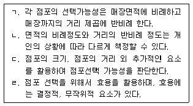
49. 라일리(Reilly)가 제시한 소매인력법칙에 대한 설명으로 옳지 않은 것은?
50. 중심지 이론은 크리스탈러(Christaller)가 제시한 이론으로 상권구조에 대한 설명을 하고 있다. 이에 대한 설명으로 옳은 것은?
51. 넬슨(R.L Nelson)이 제시한 소매입지이론에 대한 설명으로 옳지 않은 것은?
52. 범위에 따른 쇼핑센터의 분류에 대한 설명으로 옳지 않은 것은?
53. 소매집적의 개념에대한 설명으로 가장 옳은 것은?
54. 다음 상황을 고려하여 상희가 어떠한 선택을 하는 것이 좋은지 Huff 모형을 활용하여 분석할 때, 옳게 설명한 것은?
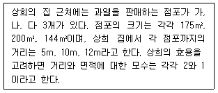
55. 다점포운영에 대한 설명으로 옳은 것은?
56. 상권 매력도를 평가하는 소매포화지수에 대한 설명으로 옳은 것은?
57. 소비행태별 상권의 분류에 대한 설명으로 옳지 않은 것은?
58. 상권에 대한 설명으로 옳지 않은 것은?
59. 다음 설명되고 있는 사례는 어떠한 방법을 통해 점포입지를 선정하려는 방법인가?
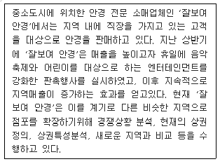
60. 입지분석시 입지주변의 업종을 조사하여 상호보완업종 또는 상호 경합 또는 피해업종이 배치되어 있는지를 파악하여야 한다. 아래의 항목 가운데서 상호 경합 또는 피해업종이라고 볼수 있는 것은?
4과목: 유통마케팅
61. 박스 안의 내용은 어떤 심리적 과정에 대한 설명인가?
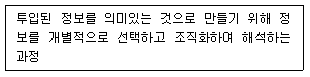
62. 근래에 들어 브랜드 자산에 대한 중요성이 강조되고 있다. 브랜드에 대한 설명으로 옳은 것은?
63. A사는 신제품을 개발하여 시장에 출시하였다. 시장 조사 결과 올해에 개당 1,000원에 55,000개가 판매될 것으로 예상되었다. 이 경우, 변동비율이 40%이고, 고정비가 30,000,000원이라면 손익분기점에서의 판매수량은 몇 개 인가?
64. 서비스의 품질을 높이기 위해서는 개별화(customization)를 추구하여야 한다. 아래의 내용 중에서 개별화를 추구하는 방법과 거리가 먼 것은?
65. 기업 마케팅의 거시환경(macro environment)에 대한 설명으로 옳지 않은 것은?
66. 누적생산량과 단위당 생산원가와의 관계를 나타낸 곡선은 무엇인가?
67. 유통업체 브랜드(private brand)에 대한 설명으로 옳지 않은 것은?
68. SERVQUAL 모형에 의하면 서비스 품질을 결정하는 5가지 차원이 있다. 아래의 내용 중에서 서비스품질을 결정하는 5가지 차원에 속하지 않는 것은?
69. 브랜드 전략에 대한 설명으로 옳지 않은 것은?
70. 소매점 광고 도구 중 인터넷 광고 기법에 대한 종류와 그 설명으로 옳지 않은 것은?
71. 아래의 빈칸에 들어갈 가격 결정 방식으로 올바르게 나열된 것은?
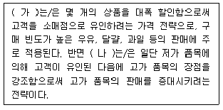
72. 비주얼 머천다이징의 역할에 대한 설명으로 옳지 않은 것은?
73. 점포 레이아웃과 관련된 설명으로 옳지 않은 것은?
74. 내적 준거가격(internal reference price)에 해당하지 않는 것은?
75. 다음의 내용은 무엇을 설명하는 것인가?
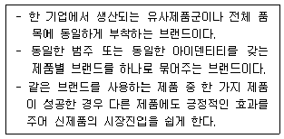
76. 업체별 머천다이징의 지향점에 대한 설명으로 가장 옳지 않은 것은?
77. 격자형(grid type) 레이아웃에 대한 내용만을 모은 것은?
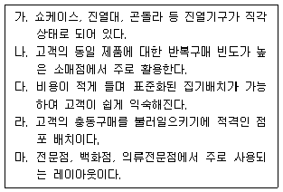
78. 박스안의 설명은 다음 중 어느 것에 대한 것인가?
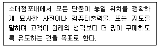
79. 인터넷 소매업과 카탈로그 소매업 등의 통신(direct mail : DM) 소매업의 공통점으로 보기 어려운 것은?
80. 제품믹스 가격결정 방식에 해당하지 않는 것은?
5과목: 유통정보
81. 정보시스템의 효과성을 제고시키기 위한 정보의 질적 속성으로 가장 거리가 먼 것은?
82. SCM(Supply Chain Management)의 기본적인 개념으로 가장 옳지 않은 것은?
83. 기업에서 의사결정지원시스템이 필요하게 된 배경으로 가장 거리가 먼 것은?
84. 인터넷을 본격적으로 활용하는 디지털 시대에 있어서 기업의 이해당사자들 간에 예상되는 변화로써 가장 옳지 않은 것은?
85. 유통정보시스템을 효율적으로 구축할 경우 고려해야 할 사항으로 가장 거리가 먼 것은?
86. 유통정보시스템의 구축과정중 기획단계에서 수행해야 하는 것은?
87. 전자결제시스템이 전자상거래에 이용되기 위해 갖추어야 할 기본 조건으로 가장 거리가 먼 것은?
88. 전자상거래 중개자의 역할과 구조에 대한 설명으로 가장 옳지 않은 것은?
89. EPC코드 관련 내용으로 가장 옳지 않은 것은?
90. DES 암호화 방식을 사용하여 6명의 사용자가 메시지를 암호화하기 위해서 필요한 키의 수는?
91. 고객 데이터의 속성과 분석기법에 대한 설명으로 가장 옳지 않은 것은?
92. 기업이 CAO(Computer Assisted Ordering) 시스템을 시행하는 이유로서 가장 거리가 먼 것은?
93. 인터넷의 특징을 설명한 것으로 가장 거리가 먼 것은?
94. 채찍효과(Bullwhip Effect) 대처방안으로 가장 옳지 않은 것은?
95. 정보를 지식으로 전환하는데 필요한 네가지 활동으로 가장 적합하지 않은 것은?
96. 크로스도킹(Cross Docking)의 기대효과로 가장 옳지 않은 것은?
97. 전술계획수준의 의사결정지원시스템이 수행해야 할 기능으로 가장 거리가 먼 것은?
98. e-mail의 특성으로 가장 거리가 먼 것은?
99. 다음은 최신 ICT(lnformation Communication Technology)를 활용하여 기업이 당면한 문제를 해결하고, 경쟁우위를 확보한 사례이다. 보기의 사례에서 활용한 주요 기술로 가장 적절한 것은?
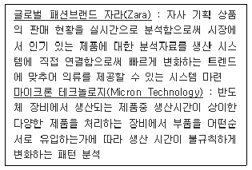
100. 재래상거래와 전자상거래의 물류특성을 볼때, 전자상 거래의 물류 특징과 거리가 가장 먼 것은?